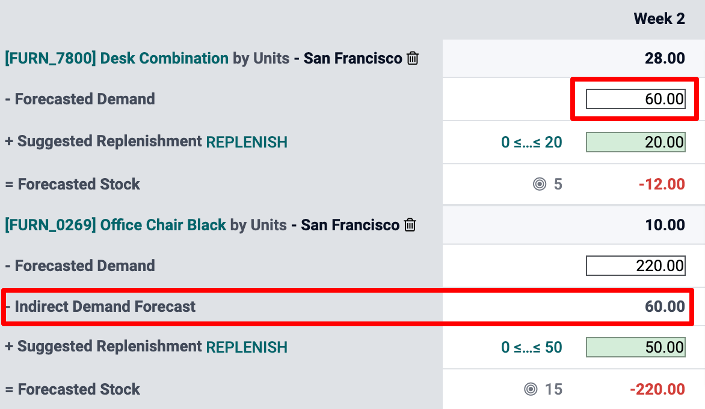

Use the Master Production Schedule¶
The Master Production Schedule (MPS) is a valuable tool to plan your production based on your demand forecast.
Configuration¶
Go to the and activate the Master Production Schedule feature before hitting save.
Tip
In the MPS settings, you can define the time range of your MPS (month/week/day) and the number of periods you want to display at all times.
Now, go to and click on add a product. You can now define your safety stock target (= the stock you want to have on hand at the end of the period) and the minimum and maximum quantities that must or can be replenished in each period.

In the MPS view, you can decide which information you would like to display by clicking on rows. For instance, the Actual demand will show you which quantity of products has already been ordered for the period, or Available to Promise, what can still be sold during that same period (what you plan to replenish - what is already sold during the period). You can also decide to hide rows if you like.

Estimate your demand and launch replenishment¶
The next step is to estimate the demand for the chosen period. This is done in the Forecasted Demand Row. You can easily, at any time, compare the demand forecast with the actual demand (= confirmed sales). The demand forecast for a finished product will impact the indirect demand for its components.
Once the forecasted demand has been set, the quantity to replenish for the different periods will automatically be computed. The replenishments you are supposed to launch based on your lead times (vendor lead time or manufacturing lead time) are then displayed in green. You can now launch the replenishment by clicking on the replenish button.
Depending on the configuration of the product (buy vs. manufacture), requests for quotations or manufacturing orders will be created. You can easily access those by clicking on the Actual Replenishment cell.

In case you manually edit the Suggested Replenishment quantity, a small cross will appear on the left hand side of the cell. In case you want to go back to the automatically computed value given by Odoo, simply click the cross.
Cells color signification¶
The cells, which are part of the Suggested Replenishment line, can take different colors depending on the situation:
Green: quantity of products which should be replenished to reach the expected safety stock considering the demand forecast and the indirect demand forecast.
Grey: replenishment order has already been generated, and its quantity still matches current data.
Red: replenishment order has already been generated, and its quantity was too high considering current data.
Orange: replenishment order has already been generated, and its quantity was too low considering current data.
The Forecasted stock line can also contain red cells, which means the stock will be negative during the period in question.
What if I have underestimated the demand?¶
You can still increase the demand forecast. It will impact the quantity to replenish. The cell will become orange, and you’ll be able to launch a new replenishment.
What if I have overestimated the demand?¶
You can decrease the demand forecast. The cell will become red to inform you that you’ve ordered more than planned. If you’re still able to do it, you can cancel some RFQ or MO manually.
What if I wrongly added a product to the MPS?¶
You can easily remove a product from the MPS by clicking the small bin on the right of its name.